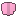
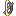
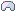
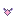
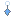
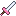
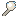
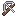
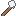
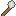

Donderbuik

Mechanics
Roze cirkels = wolkenkussens. Sta erop als hij gaat zuigen, anders trekt hij je naar zijn buik.
Donderbuik
Gele cirkel: sta er samen in, dan deel je de donderslag.
Named lootBenoemde buit

Donderbuiks Regenjasje 2% guhddelijk
Donderboog 10% legendarisch Onweerstaf 10% legendarisch
Onweerstaf 10% legendarisch
All dropsAlle buit
Every helper (at least 5% of the work) gets their own chest; the chances below are per player.
Elke helper (minstens 5% van het werk) krijgt een eigen kist; de kansen hieronder zijn per speler.
The boss chestDe baaskist
2 rolls, rarity rolled with luck 4.0.2 keer rollen, de zeldzaamheid met geluk 4.0. CoinsMunten: 900-1600 bronzebrons.
| Item | Chance per rollKans per rol |
|---|---|
 Wolkwachthelm | 7.7% |
| Wolkwachtkuras | 7.7% |
| Wolkwachtbeenstukken | 7.7% |
| Wolkwachtlaarzen | 7.7% |
| Wolkwachthandschoenen | 7.7% |
| Wolkwachtcape | 7.7% |
| Wolkring | 7.7% |
 Walvisketting | 7.7% |
 Regendruppeloorbel | 7.7% |
| Stormarmband | 7.7% |
 Wolkwachtzwaard | 3.8% |
 Walvisbotknots | 3.8% |
| Stormboog | 3.8% |
 Harpoenkruisboog | 3.8% |
 Wolkenstaf | 3.8% |
 Bliksemstaf | 3.8% |
AlsoOok
| KindSoort | WhatWat | ChanceKans |
|---|---|---|
| PetHuisdier | Donderbuikje | Versla Donderbuik op de Staartvlakte. |
| TrophyTrofee | Ingemaakt Onweertje | sure, on your first win (decoration for home)zeker, bij je eerste overwinning (deco voor thuis) |
| Growth fluffGroeipluis | Groeipluis | 1 per helper, every win1 per helper, elke overwinning |
PetHuisdier
Donderbuikje: Een piepklein roze regenwolkje dat kriebelt als het regent. Versla Donderbuik op de Staartvlakte.
Hidden by your spoiler setting.Verborgen door je spoilerinstelling.